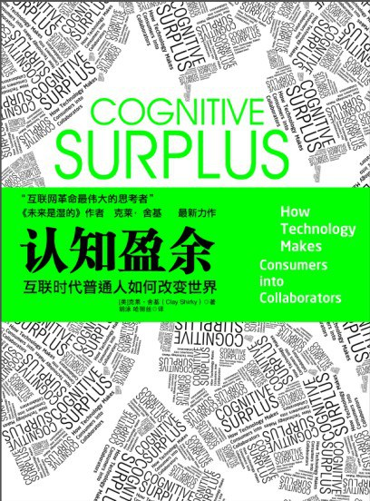

|  |
认知盈余：自由时间的力量 |
推荐序 互联网新时代的晨光
发展潮流的旋涡正在席卷我们，网络正在发生演变。过去，我们可以把网络解读为一种精英享用的新兴工具，它向用户提供的是一个接触传统精英文化的更加便捷的通道，也就是说互联网是内容的传递者而不是生产者；现在则不同，每个人都可以成为内容的生产者，互联网作为一个社会形态的元素，正在为社会源源不断地输出新的内容、制造新的话题。
“认知盈余”是新时代网民赋予互联网从业者最大的红利之一。 什么是“认知盈余”，克莱·舍基给出的定义很简单，就是受过教育，并拥有自由支配时间的人，他们有丰富的知识背景，同时有强烈的分享欲望，这些人的时间汇聚在一起，产生巨大的社会效应。可以说，Facebook、Twitter以及维基百科的成功，都是“认知盈余”的功劳。在中国，微博的兴起，同样有赖于它。
一个新的互联网时代即将到来。这将是一个鼓励分享、平台崛起的时代。靠单一产品赢得用户的时代已经过去、渠道为王的传统思维不再吃香。在新的时代，如果还背着这些包袱，那就等于给波音787装了一个拖拉机的马达，想飞也飞不起来。如何铸造一个供更多合作伙伴共同创造、供用户自由选择的平台，才是互联网新时代从业者需要思考的问题。 这个新时代，不再信奉传统的弱肉强食般的“丛林法则”，它更崇尚的是“天空法则”。所谓“天高任鸟飞”，所有的人在同一天空下，但生存的维度并不完全重合，麻雀有麻雀的天空，老鹰也有老鹰的天空。决定能否成功、有多大成功的，是自己发现需求、主动创造分享平台的能力。
译者序 认知盈余作为一种可能
舍基对传统媒体在相当程度上采取了鄙夷的态度，他认为，哪怕是网上最愚蠢和疯狂的创造和分享的举措（例如汇集数千张“大笑猫”的图片），也比坐在电视机前被动消费数以千亿计小时的节目强。根据舍基的统计，美国人一年花在看电视上的时间大约2000亿个小时。
认为新媒体与传统媒体判若鸿沟的人通常也强调代际的变化。旧媒体对新媒体感到不安，很大程度上缘于上一代人对年轻人所拥有的新科技感到不安，尤其是上一代人对于已进入年轻人文化核心的新媒体感到不安。从过去媒体恐慌症的历史（如漫画、摇滚乐、电子游戏机等）来看，大人对网络内容的一切恐惧，不过是来自对孩子自主与自行界定媒体品味需求的不安感。比如，年轻人接受游戏，而年长的人则大多拒绝它。一旦年轻人长大，年长的人逝去，游戏也会像昔日的摇滚乐成为无足争论之事。所以，反对游戏的人不仅需要面对事实，还需要面对历史。
舍基这样的新媒体鼓吹者一般坚信，历史站在自己的一边。他观察到，在电视历史上首次出现了一部分年轻人看电视的时间少于他们父辈的现象。拥有更快捷的互动媒介的年轻一代正在把他们的行为从单纯对媒介的消费中转变过来。甚至当他们观看在线视频的时候，看似和电视没什么两样，但他们却有机会针对这些素材发表评论、分享、贴上标签、评分或者排名，当然还可以和世界上其他的观众一起讨论。这个区别实际上是参与同围观的区别：参与者会给反馈，而围观者不会。对参与社区的人们来说，电影、书籍和电视剧创造的不仅是一种消费的机会，它们创造的还是一种回应、讨论、争辩甚至创造的机会。舍基把媒介消费的这种转变称为“净认知盈余”。
舍基在书中列举了大量协同行动的例子，比如维基百科的编纂就是他最爱引证的证据之一。还有些例子听上去颇有些匪夷所思：在韩国民众持续抗议进口美国牛肉的事件当中，一群某个韩国男孩乐队组合的少女粉丝通过在网上的松散联系，竟然几乎迫使政府下台。
舍基的另外一个问题是，他低估了文化消费的价值。在网络上创造愚蠢的东西的价值，果真高于阅读一本复杂的侦探小说的价值吗？是不是只要是创造就拥有了某种神圣性，而只要是消费就显示了低级智慧？美国文化批评家史蒂文·约翰逊在他2005年出版的著作《坏事变好事》（Everything Bad Is Good for You ）中，曾以游戏和电视剧为例，直接向下述说法发起挑战：大众文化是一种致人愚蠢的东西。
在这里我们也可以看到舍基犯了其他媒介消费的批判者（比如说波兹曼）所易犯的同样毛病：我们不需要引用德里达的观点也可以知道，文本阅读本身就是一个创造性行为，我们必须不断地向字句的模糊性之中注入意义。头脑在这里并不是简单地被浪费；我们要怀疑舍基对于创造的定义：并不是只有我们的想法结晶为物理的或者可见的剩余物才算是创造。况且，在我们真正创造出任何有意义的产物之前，我们必得经历一个消费和吸收的过程，并对我们所消费和吸收的进行思考。这也就是尼采在《查拉图斯特拉如是说》中所言，我们必须先变成啜饮一切水的骆驼，才会成为狮子。
当然，只要舍基不把他对媒介和认知盈余的观察弄得那么两极化，这些批评其实也是无的放矢的。舍基正确地指出，人们使用媒介具有三种目的：消费、创造与分享。20世纪的媒介作为一种单一事件发展着：消费。但眼下我们正在越来越多地创造和分享媒介，这是件值得大书特书的事情。不过，消费的行为并不会全然消失，而是会继续扮演重要作用。
第1章 当自由时间累积成认知盈余
18世纪20年代，整个伦敦正忙着把自己灌得酩酊大醉。整个城市都陷入了对杜松子酒的狂热之中，这种现象的出现很大程度上是由那些从农村来城市找工作的人推动的。杜松子酒具有不少吸引人的特质：酿造它的谷物在当地就能买到；它的包装比啤酒更有型；它比进口葡萄酒便宜得多。因此杜松子酒成了那些承受着新城市生活重压的新兴人群的一种麻醉剂，生活压力催生了一系列新的行为，包括对杜松子酒的狂热。
这是我见过的第一本在译者序中，译者居然对作者的观点给出辩证性批评的书！而不是全然赞赏作者的观点！我看的时候甚至一度怀疑自己的眼睛，反复往前回看，确认我正在读的是“译者序”部分，而不是“推荐序”或者什么别的内容！这位胡泳译者可真是有趣。